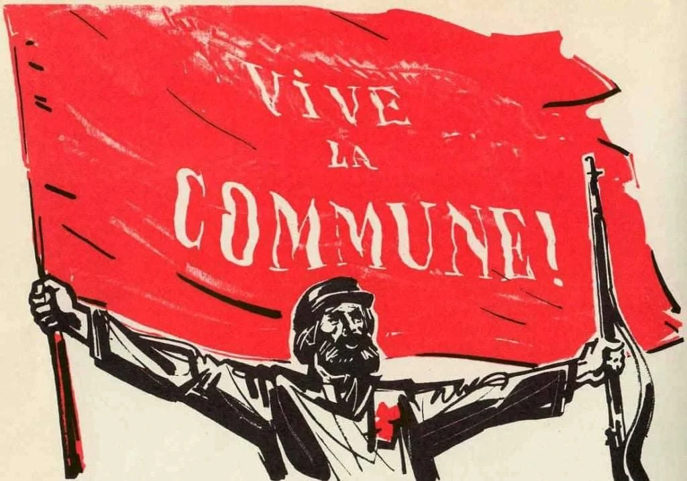
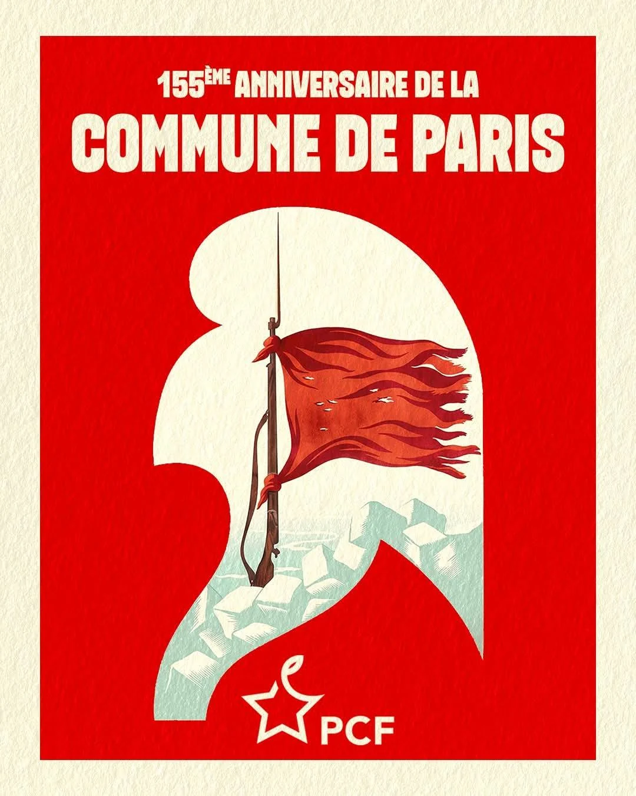

Mémoire
155 ans après, vive la Commune de Paris !
Date indiquée par Facebook · 18 mars 2026
Repères éditoriaux
Le 18 mars 1871, les quartiers populaires de Paris ont ouvert la voie à une expérience de démocratie et de pouvoir populaire. Cent cinquante-cinq ans plus tard, le combat des communards pour une République sociale nous inspire toujours.
Texte conservé avec la publication
18 mars 1871 - Début de la Commune de Paris.
Les quartiers populaires et ouvriers de Paris se soulèvent pour s’engager dans une forme inédite de gouvernement démocratique : la Commune de Paris.
155 ans après, l’esprit de la Commune de Paris continue de nous inspirer.
Pouvoir au peuple, justice sociale, démocratie : les communard·e·s ont ouvert un chemin qui reste d’une brûlante actualité.
Ils et elles ont posé les bases de services publics au service du peuple.
Face aux inégalités, à l’autoritarisme et à la loi du profit, nous faisons vivre cet héritage de lutte et d’émancipation.
Parce que leur combat était celui du monde du travail, il est toujours le nôtre.
🔴 Vive la Commune de Paris !
⭐ Vive la République sociale !


Sources
Archive rouge · export Facebook · AR-0002-FB-00837
À lire aussi · « La Commune n’est pas morte ! » Au mur des Fédérés